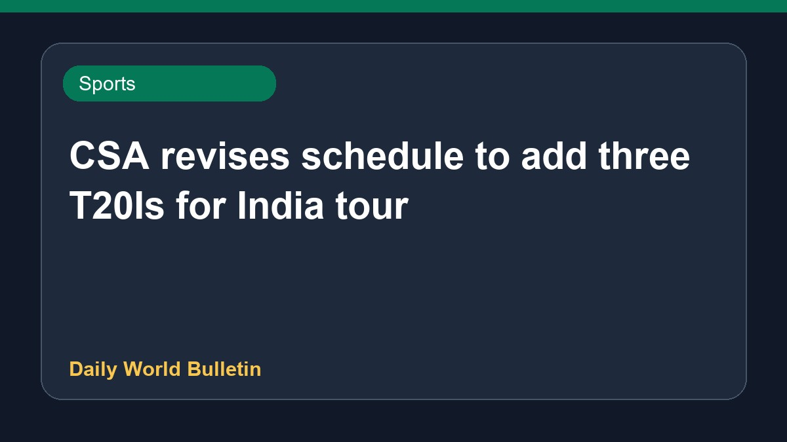

CSA revises schedule to add three T20Is for India tour

Cricket South Africa has revised its upcoming schedule to incorporate three T20 International matches for the India women cricket team tour. The itinerary expansion adds more fixtures to the bilateral series. Detailed schedules and venue specifics regarding the newly added T20 matches remain limited based on current reports.
Original source: Sports News Sources
CSA revises schedule to include three T20Is for India series - Cricbuzz ↗
CSA revises schedule to include three T20Is for India series - Cricbuzz ↗